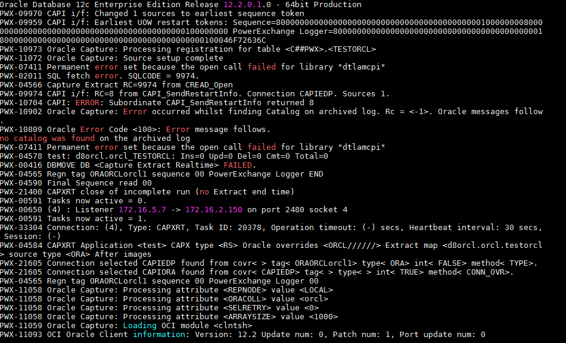

Connection Instruction Between Informatica PowerExchange CDC and FusionInsight
Succeeded Case
Informatica PowerexChange CDC 10.2.0 <--> FusionInsight HD 6.5
Environment Information
- Informatica PowerExchange CDC 10.2.0 Linux & Windows version
- Informatica PowerExchange Publisher 1.2.0
- Oracle database 11g
- jdk-7u71-linux-x64.rpm
- FusionInsight HD Kafka client
Architecture
- A data source, oracle database
- One Linux machine, installed with Informatica PWX CDC, start the listener and logger service, then install the PWX Publisher which can transfer the log data captured by PWX CDC to the kafka topic.
- One Linux machine, installed with FusionInsight HD Kafka client, consume the data transferred from PWX Publisher
- (optional) One Windows machine, installed with PWX CDC, start the listener service, use navigator to see the data captured by PWX CDC.
database configuration
>This part can refer to the Informatica PowerExchange CDC user guide
https://docs.informatica.com/data-integration/powerexchange-for-cdc-and-mainframe/10-2/_cdc-guide-for-linux-unix-and-windows_powerexchange-for-cdc-and-mainframe_10-2_ditamap/powerexchange_cdc_data_sources_1/oracle_cdc_with_logminer.html
login to the system as oracle user, use Sqlplus / as sysdba login to Oracle database, open Archive Log:
SHUTDOWN IMMEDIATE; STARTUP MOUNT; ALTER DATABASE ARCHIVELOG; ALTER DATABASE OPEN; SHUTDOWN IMMEDIATE: STARTUP; archive log list;Tips:Back up your database after both SHUTDOWN commands..
Set Up Oracle Minimal Global Supplemental Logging
SELECT supplemental_log_data_min, force_logging FROM v$database; alter database add supplemental log data; alter database force logging; ALTER SYSTEM switch logfile;Copy the Oracle Catalog to the Archived Logs
EXECUTE SYS.DBMS_LOGMNR_D.BUILD(options => sys.dbms_logmnr_d.store_in_redo_logs);Define a CDC User and Grant User Privileges

create a test table and insert some data

Install Informatica PWX CDC & PWX Publisher
Install Informatica PWX CDC in Linux
- Get the installation package
pwx1020_linux_em64t.tar. - untar the package and run
./install.sh, configure the installation path here is/opt/PowerExchange/10.2.0.
Configure the environment
open environment file
vi ~/.bash_profileadd the following configuration
export PWX_CONFIG=/opt/PowerExchange10.2.0/dbmover.cfg export PWX_HOME=/opt/PowerExchange10.2.0 PATH=$PATH:$HOME/bin:/usr/lib/oracle/12.1/client64/bin:/opt/PowerExchange10.2.0 export LD_LIBRARY_PATH=$ORACLE_HOME/lib:/opt/PowerExchange10.2.0 export NLS_LANG=AMERICAN_AMERICA.ZHS16GBK- run
source ~/.bash_profile run
dtlinfo,check the installation
- run
Configure dbmover.cfg and pwxccl.cfg file
Configure
dbmover.cfgas followingnodelnis the self defined listener node name
the second
ORCLin ORACLEID is the database name to be listened.
CAPT_PATH is the CDC control file path, the path should be created previously

define the SVCNODE and CMDNODE name

Configure
pwxccl.cfgas followingCONDENSENAMEshould be the same asSVCNODEindbmover.cfg- DBID is the database SID
- CAPTURE_NODE is the capture node name
- CAPTURE_NODE_UID is the database user name
CAPTURE_NODE_PWD is the database user password

Start listener and logger services

Use PWX CDC capture ORACLE log data
install Informatica PWX CDC in Windows machine
Get the installation package and double click to install, add environment variable
PWX_CONFIG,configured as the dbmover.cfg file in PWX
Configure
dbmover.cfgfileset listener name, add listener Information in server side

set the listened database name

set the control file path
start the listener

start Navigator

In Navigator create a new registeration group as following:

NEXT
chick next,we can see the test table created in oracle, double click the table name, choose all columns


chick next, change state to
active, check boxrun DDL immediately, click finish
In Extraction Groups, double click the orcl11 created before, right click, add Extract Defination, set the map name and table name
click next, can see the capture created before

click add, finish

click the icon, run row test, the captured data is shown as following


Use PWX CDC publisher to connect Kafka
Change kafka configuration file
- Configure
producer.properties, add the following configurationsasl.mechanism = GSSAPI key.serializer = org.apache.kafka.common.serialization.StringSerializer value.serializer = org.apache.kafka.common.serialization.ByteArraySerializer key.deserializer = org.apache.kafka.common.serialization.StringDeserializer value.deserializer = org.apache.kafka.common.serialization.StringDeserializer Configure
jaas.confas followingcreate a kafka topic, named
pwxtopiccd /opt/hadoopclient/Kafka/kafka/bin kafka-topics.sh --create --zookeeper 172.16.4.21:24002/kafka --partitions 2 --replication-factor 2 --topic pwxtopicInstall Informatica PWX Publisher
Get the package
pwxcdcpub120_linux_x64.tar.gz,untar itLogin as root，add the following configuration in
~/.bash_profilefileexport PWXPUB_HOME=/opt/pwxcdcpub120_linux_x64 export KAFKA_CLIENT_LIBS=/opt/hadoopclient/Kafka/kafka/libs export PWX_LICENSE=/opt/pwx1020.key- source the environment, kerberos认证
source ~/.bash_profile source /opt/hadoopclien/bigdata_env kinit developuser Copy all the files in directory
samplestoinstanceA/configConfiguration for PWX Publisher can refer to the Informatica user guide https://docs.informatica.com/data-integration/powerexchange-cdc-publisher/1-1/user-guide/configuring-powerexchange-cdc-publisher.html
Configure
cdcPublisherAvro.cfg
Configure
cdcPublisherCommon.cfgConfigure
cdcPublisherKafka.cfg, set kafka topic name and the properties file path
Configure
cdcPowerExchange.cfg- Extract.pwxCapiConnectionName is the
CAPI_CONNECTIONindbmover.cfgfile - Extract.pwxExtractionMapSchemaName is the schema name in pwx extraction, here is
u8orcl - Extract.pwxNodeLocation is pwx node name
- Extract.pwxNodeUserId/Extract.pwxNodePwd and Extract.pwxXmapUserId/Extract.pwxXmappassword is database user name and pasword


- Extract.pwxCapiConnectionName is the
Change the
PwxCDCPublisher.shfile in installation path bin,add the followingRUN="$RUN -Djava.security.auth.login.config=/opt/hadoopclient/Kafka/kafka/config/jaas.conf"
- Start pwx CDC Publisher,run
sh PwxCDCPublisher.sh

Start kafka consumer
Insert data in oracle, the captured data in kafka is the following


Update data in oracle, the captured data in kafka is the following


Delete data in oracle, the captured data in kafka is the following

Q&A
1.Failed to start pwxccl  A:Run the following script in oracle
exec SYS.DBMS_LOGMNR_D.BUILD(options => sys.dbms_logmnr_d.store_in_redo_logs);
Then grant C##PWX sysdba right
grant sysdba to C##PWX